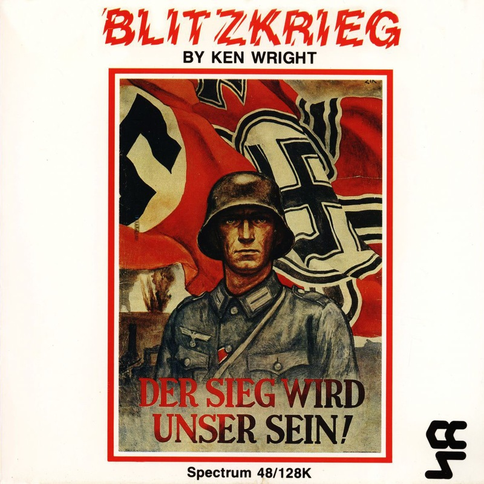
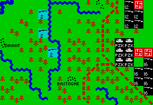

Blitzkrieg


{kind=link}

| Publisher: | CCS |
| Price: | £9.95 |
| Year: | 1988 |
| Source: | CRASH, Issue 49 |

Blitzkrieg is a large-scale simulation of the German invasion of France in May 1940. It comes from CCS’s increasingly reputable designer K Wright, whose previous credits for the company include Yankee and the Smash Napoleon At War (they earned 87% and 95% Overall respectively in Issues 42 and 34); and don’t worry, this well-presented and playable game is nothing to do with Ariolasoft’s terrible Commodore 64 Blitzkrieg.
A centre-spread map in the nicely-produced rulebook shows the historical plan of attack by the Axis powers, which was of course successful. A diversionary attack was launched from the German border into central Belgium, and while the Allied defences were engaged there two Axis armies got underneath the line to the south, dashed through Switzerland, and made it into France. The campaign forces included armoured divisions, parachute regiments and substantial air support.
Blitzkrieg doesn’t let the player manipulate all aspects of the Axis invasion — you can’t even distribute those charmingly abstract air-support points common in games of this type — but concentrates on the large-scale movement of the six-division armies.

win or lose the day on this clear, well-
scrolling screen
It bears a strong visual resemblance to programmer Wright’s previous games Waterloo (from Lothlorien; 92% in Issue 23) and Yankee. A clear, attractive map fills the screen without clutter in the margins, and a narrow strip along the bottom contains a menu. Because the menu is squeezed untidily into such a small space, most of the Spectrum’s limited display can be given over to the map: the entire play area fills about four screens, scrolls without fuss, and covers the eastern part of France, all of Belgium and Switzerland, most of Holland, and the western extremity of Germany. All are clearly marked onscreen so you don’t need the map and can stay glued to the set.
There are seven different types of terrain, including country borders. Units appear as the traditional squares.
This innocuously traditional appearance hides an innovative and unexpected system of play. The player commands the 4th, 6th, 12th and 16th armies, and the Panzergruppe Kleist, and though each army is divided into six units (infantry, armoured or mechanised) it can only be given orders as a whole.
And unlike Wright’s earlier games, Blitzkrieg does not offer the easy option of overriding the artificial intelligence and placing units individually. The intention is to simulate the uncertainty of a real campaign, where decisions made by commanders pushing counters across boardroom maps cannot always be implemented in real life. Yet it’s not as frustrating as one might imagine...
Though units cannot be controlled individually, they fight separately. The strength of a unit is expressed in a rough percentage figure, chipped away 5% at a time, and — as in Yankee — morale also affects a unit’s performance. The stages of morale range from Excellent, which adds 30% to the unit’s effectiveness, to Abysmal; it goes steadily down depending on the unit’s losses. It seems morale never improves, so I expect most of the army is extremely depressed by the end of the game.
Movement is unusual: the player can try to form lines of units without having control over the individual units. You set the central position for which the army will aim, and can mark right and left flanks to determine how far north and south the units will go.
If the central position is used on its own without a right and left flank, all units will commit themselves to a long narrow front line against the enemy. If, on the other hand, the player sets all three markers as close together as possible, three of the army’s six units will hustle tightly forward and three will hang back in reserve.
But everything is very indeterminate. The player can only give orders for the advance and hope that the front-line units will manage to stay roughly together; because terrain takes its toll on movement points, some get on considerably faster than others.
The movement orders are used to dictate the whole army’s general intentions. The ATTACK order means every unit will attack every enemy unit it comes within range of, and should be used only when you’re convinced that an all-out assault will not be too damaging. DISCRETION is the standard order; the army’s commander will weigh up the factors and decide whether to attack an adjacent unit. RETREAT, not a very useful order, limits combat to defence.
Because the armies should be on DISCRETION most of the time, attack decisions are usually out of the player’s hands. Once the movement orders have been given, you can just sit back and watch while your side advances and attacks. Movement and combat are displayed in separate phases, at a brisk pace which demands attention. There’s no chance to get up and make a cup of coffee or turn over a record, unless you don’t mind missing some of the action.
The map scrolls to where movement or combat is taking place and shows each step separately. Even if a unit is attacked by three adjacent units, it defends itself against each in turn, and units don’t combine attacks as effectively as in many games.
Terrain modifies the effectiveness of an attack, usually to the disadvantage of the attacker: trying to launch an offensive from the middle of a major river not unsurprisingly puts a unit at a 40% disadvantage. But these terrain effects would be more interesting if you could determine more exactly where units are going to end up.
After a particularly successful combat, a unit may advance into a space left by a retreating or routed enemy. Or at the end of the combat phase a unit may disband and redistribute its strength automatically to other units.
There are various victory conditions — or, rather, conditions which will end the game. Play is terminated if the effectiveness of either army falls too low, if the Germans make it to the key city of Amiens near Paris, if even a single Allied unit gets through the German lines, or if the German armies don’t get far enough west. Victory is then decided simply on the effectiveness of the two armies, and the Axis side wins if it seems France is likely to fall in the circumstances. This abrupt cutoff can be frustrating, but you can choose to carry on.
On my first attempt at Blitzkrieg I made the same mistake as the Allies did in committing myself to a static war of attrition. But the way to be successful is to advance as quickly and aggressively as you can, and I found to my satisfaction that the Allies shrank back readily in the face of a forward thrust. On my third game I got a ‘substantial German victory’, but that was only on the first level; there are three.
Though there are many restrictions — you can only play the Axis side, there’s no two-player option and you can’t position units exactly — the quality and playability of Blitzkrieg make the lack of frills irrelevant. It’s fascinating, compulsive and so straightforward to control that nothing interrupts the flow of gameplay. The game only drags in the earliest movement phases, where — as in Yankee — one has to watch the map scrolling around blank expanses while invisible enemy units move.
The substantial rulebook gives historical background and a clear description of the game’s mechanics — and, as is becoming standard, the programmer pleads his cause and anticipates criticism by defending the idiosyncrasies of his game.
Blitzkrieg is thoroughly recommended to everyone, whatever their preference in games. Its straightforward operation won’t bewilder someone unused to wargames, yet its possibilities are complex enough to challenge experienced strategists. Most important of all, it’s fun to play.
Presentation 89%
Almost immaculate
Graphics 90%
Minimalist and extremely effective, with space used well and the onscreen map clearly marked
Rules 85%
Thorough and well-presented
Authenticity 80%
Unusually fast-moving and atmospheric for a traditional game
Playability 93%
Compelling and absorbing
Overall 90%
Definitely worth buying